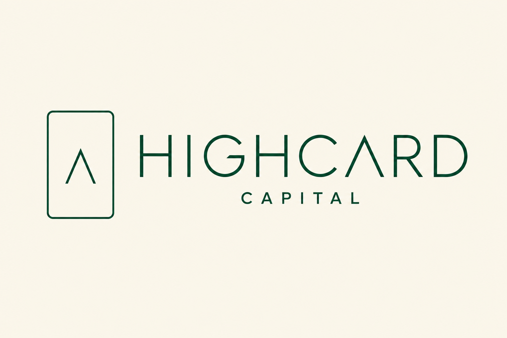
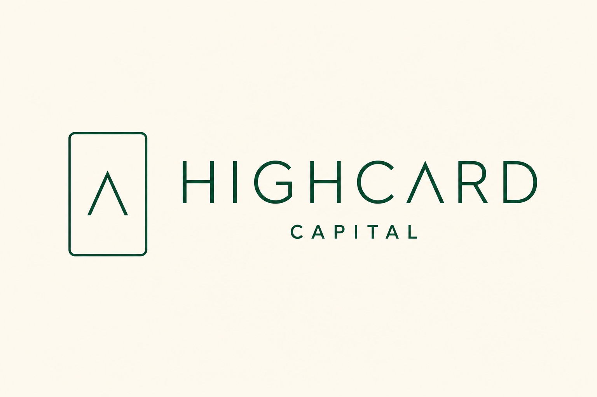
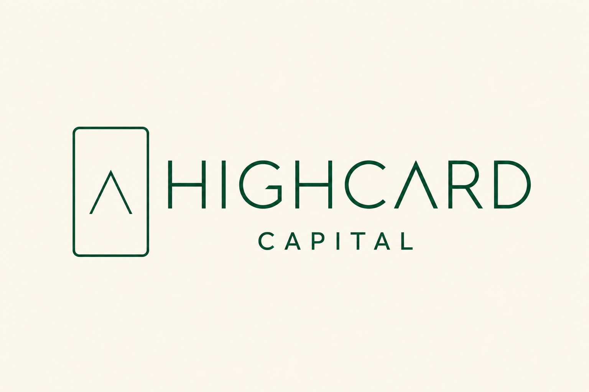

High Card Capital · Brand Exploration 07 · Lockup Centering
Three ways to sit together.
Rendered by gpt-image-2 with the full confirmed spec: angled-terminal lettering, connected R, peak-A in HIGHCARD, tight centered CAPITAL, slimmer card, and the triangle at its same spot with a 20%-thinner stroke than the border. Only the vertical alignment changes between the three.
Option 1 · Word-centered
Card centers on HIGHCARD

The card's center lines up with HIGHCARD only — CAPITAL hangs below the shared axis. Feels top-weighted and confident; the main word owns the eye-line.
Option 2 · Block-centered
Card centers on the whole text

The card centers on HIGHCARD + CAPITAL together. The most balanced and symmetrical — nothing leans anywhere.
Option 3 · Edge-matched
Card spans the full text height

The card's top edge aligns with the top of HIGHCARD and its bottom edge with CAPITAL's baseline — the whole lockup reads as one clean rectangle. Tightest, most architectural.